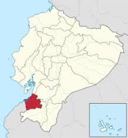
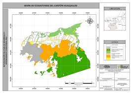
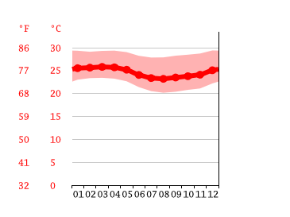
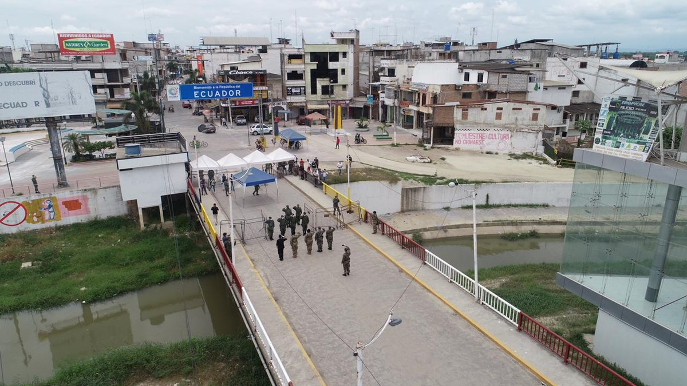

| Home | Galeria | Siuacion geografica | Costumbres | Sitios turisticos |
| Aspecto | Descripción | Imagen |
|---|---|---|
| Ubicación |
País: Ecuador Provincia: El Oro Cantón: Huaquillas Región: Costa Coordenadas: 3°28′ S, 80°14′ O |
 |
| Límites Geográficos |
Norte: Cantón Arenillas Sur: Perú (frontera internacional) Este: Arenillas Oeste: Cerca del Océano Pacífico |
 |
| Altitud y Clima |
Altitud: 10 a 40 msnm Clima: Tropical seco Temperatura promedio: 25 °C a 32 °C |
 |
| Importancia Geográfica |
Ciudad fronteriza con Perú Cruce de la Carretera Panamericana Alta actividad comercial binacional |
 |